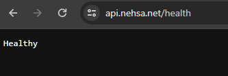

Configure to run in different environmentsBy using different appsettings files, you can configure the
app to run in different environments. For example, you can have different connection
strings for development, staging, and production environments.
var app = webApplicationBuilder.Build();
var logger = app.Services.GetRequiredService<ILogger<Program>>();
logger.LogInformation("Logging works!");
Configure for Single Page
ApplicationSPASPAs are single-page websites, meaning that everything is
compiled into a single page. The server serves the index.html, which has all the JS,
CSS, and HTML of every page.
Setup Cross Origin Resource Sharing
CORSEnabling CORS is a two-step process, we need to update the
Kestrel web server via WebApplication.CreateBuilder (webApplicationBuilder) and then the
API layer webApplicationBuilder.Build (app):
// CORS support
webApplicationBuilder.Services.AddCors(options =>
{
options.AddPolicy(name: api,
policy =>
{
policy.WithOrigins("https://api.nehsa.net").AllowAnyMethod().AllowAnyHeader().AllowCredentials();
});
});
// set to use CORS
logger.LogInformation("Setting up CORS for API: " + api);
app.UseCors(api);
AllowAnyMethod()
Allows any HTTP method. e.g. options: WithMethods("GET", "POST", "PUT",
"DELETE").
AllowAnyHeader()
Allows any HTTP header. e.g. options: WithHeaders("Accept", "Content-Type",
"Origin").
AllowCredentials()
Allows credentials to be passed.
Setup Content Security Policy
CSPThe CSP is use to ensure that the browser only loads
scripts and other resources we explicitly allow. This is a security feature to prevent
XSS attacks.
To set up the CSP, we need to add a middleware layer that adds the
appopriate headers:
Create Middleware
public class CSPMiddleware
{
private readonly string _cspPolicy;
public CSPMiddleware(string cspPolicy)
{
_cspPolicy = cspPolicy;
}
public async Task InvokeAsync(HttpContext context, RequestDelegate next)
{
// Access the cspPolicy parameter here
context.Response.Headers.Append("Content-Security-Policy", _cspPolicy);
await next(context);
}
}
Call it
// setup the middleware to handle the Content-Security-Policy header
app.UseMiddleware<CSPMiddleware>("default-src 'self'; style-src 'self' 'unsafe-inline';
script-src 'self' 'unsafe-inline' 'unsafe-eval'; img-src 'self' data:; font-src
'self';");
default-src
Default source for all directives.
style-src
Allowed sources for stylesheets.
script-src
Allowed sources for scripts.
img-src
Allowed sources for images.
font-src
Allowed sources for fonts.
unsafe-inline
Allows inline scripts and styles.
unsafe-eval
Allows eval() and similar functions.
self
Allows the current domain only.
Cold Start IssuesWhen the server takes a long time to start
up for first requests or after server has been idle for a
while.Set the Kestrel idle timeout to 0. This will keep the
server running
indefinitely.webApplicationBuilder.WebHost.ConfigureKestrel(options =>
options.Limits.KeepAliveTimeout = TimeSpan.FromMinutes(0));
Creates a new console app in a folder called Scratch with a csproj file of:
<Project Sdk="Microsoft.NET.Sdk"> <PropertyGroup> <OutputType>Exe</OutputType> <TargetFramework>net8.0</TargetFramework> <ImplicitUsings>enable</ImplicitUsings> <Nullable>enable</Nullable> </PropertyGroup> </Project>{ "ConnectionStrings": { "Default": "<CONNECTION STRING>" }, "AllowedHosts": "*" }{ "Logging": { "LogLevel": { "Default": "Debug", "Microsoft": "Warning", "Microsoft.Hosting.Lifetime": "Information" }, "Console": { "FormatterName": "Console", "FormatterOptions": { "SingleLine": true, "IncludeScopes": true, "TimestampFormat": "yyyy-MM-ddTHH:mm:ss : ", "UseUtcTimestamp": true } } }, "Kestrel": { "Endpoints": { "Http": { "Url": "http://localhost:22006" } } } }{ "Logging": { "LogLevel": { "Default": "Error", "Microsoft": "Warning", "Microsoft.Hosting.Lifetime": "Information" }, "Console": { "FormatterName": "Console", "FormatterOptions": { "SingleLine": true, "IncludeScopes": true, "TimestampFormat": "yyyy-MM-ddTHH:mm:ss : ", "UseUtcTimestamp": true } } }, "Kestrel": { "Endpoints": { "Https": { "Url": "http://localhost:22007" } } } }-o: Output to the console
To configure VS Code to run this configuration on F5, add this to the launch.json file:
"env": { "ASPNETCORE_ENVIRONMENT": "Development" },Create a new project web api within VS Code (using an API Controller, not minimial API - see below)
Within your project folder, create a "Controllers" foldernamespace NehsaNet.Controllers { [ApiController] [Route("/")] public class Main : ControllerBase { [HttpGet] [Route("/v1/quote")] [ProducesResponseType(StatusCodes.Status200OK)] public string GetQuote() { return JsonSerializer.Serialize<string>(quotes[Random.Shared.Next(quotes.Count)]); } } }internal class Program { private static void Main(string[] args) { var builder = WebApplication.CreateBuilder(args); builder.Services.AddControllers(); var app = builder.Build(); app.UseRouting(); app.MapControllers(); app.Run(); } }public class QuoteService { private readonly string[] quotes = new string[] { "quote1", "quote2", "quote3" }; public string GetQuote() { return quotes[Random.Shared.Next(quotes.Length)]; } } namespace NehsaNet.Controllers { [ApiController] [Route("/")] public class Main : ControllerBase { private readonly QuoteService _quoteService; public Main(QuoteService quoteService) { _quoteService = quoteService; } [HttpGet] [Route("/v1/quote")] [ProducesResponseType(StatusCodes.Status200OK)] public string GetQuote() { return JsonSerializer.Serialize<string>(_quoteService.GetQuote()); } } }[HttpGet] [Route("/v1/quote/{id}")] [ProducesResponseType(StatusCodes.Status200OK)] public string GetQuote(int id) { return JsonSerializer.Serialize<string>(quotes[id]); }[HttpGet] [Route("/v1/quote")] [ProducesResponseType(StatusCodes.Status200OK)] public string GetQuote([FromQuery] int id)[HttpGet] [Route("/v1/quote/{id}")] [ProducesResponseType(StatusCodes.Status200OK)] public string GetQuote(int id, [FromQuery] string name)app.MapGet("/v1/quote", [SwaggerOperation( Summary = "Returns a single quote", Description = "A random quote is returned. Because.")] [SwaggerResponse(200, "Success")] [SwaggerResponse(500, "An error occurred")] () => { return JsonSerializer.Serialize<string>(quotes[Random.Shared.Next(quotes.Length)]); }) .WithName("Quotes") .WithOpenApi();namespace NehsaNet.Controllers { [ApiController] [Route("/")] public class Main : ControllerBase { [HttpGet] [Route("/v1/quote")] [ProducesResponseType(StatusCodes.Status200OK)] public string GetQuote() { return JsonSerializer.Serialize<string>(quotes[Random.Shared.Next(quotes.Count)]); } } }internal class Program { private static void Main(string[] args) { var builder = WebApplication.CreateBuilder(args); builder.Services.AddSwaggerGen(); var app = builder.Build(); app.UseSwagger(); app.UseSwaggerUI(); app.Run(); } }Example:
internal class Program { private static void Main(string[] args) { var builder = WebApplication.CreateBuilder(args); builder.Services.AddHealthChecks(); var app = builder.Build(); app.Run(); app.UseHealthChecks("/health"); } }
It can be activated by:
var app = webApplicationBuilder.Build(); var logger = app.Services.GetRequiredService<ILogger<Program>>(); logger.LogInformation("Logging works!");// allows serving our SPA app webApplicationBuilder.Services.AddSpaStaticFiles(configuration => { configuration.RootPath = "app/wwwrooot"; });// CORS support webApplicationBuilder.Services.AddCors(options => { options.AddPolicy(name: api, policy => { policy.WithOrigins("https://api.nehsa.net").AllowAnyMethod().AllowAnyHeader().AllowCredentials(); }); });// set to use CORS logger.LogInformation("Setting up CORS for API: " + api); app.UseCors(api);To set up the CSP, we need to add a middleware layer that adds the appopriate headers:
public class CSPMiddleware { private readonly string _cspPolicy; public CSPMiddleware(string cspPolicy) { _cspPolicy = cspPolicy; } public async Task InvokeAsync(HttpContext context, RequestDelegate next) { // Access the cspPolicy parameter here context.Response.Headers.Append("Content-Security-Policy", _cspPolicy); await next(context); } }// setup the middleware to handle the Content-Security-Policy header app.UseMiddleware<CSPMiddleware>("default-src 'self'; style-src 'self' 'unsafe-inline'; script-src 'self' 'unsafe-inline' 'unsafe-eval'; img-src 'self' data:; font-src 'self';");webApplicationBuilder.WebHost.ConfigureKestrel(options => options.Limits.KeepAliveTimeout = TimeSpan.FromMinutes(0));